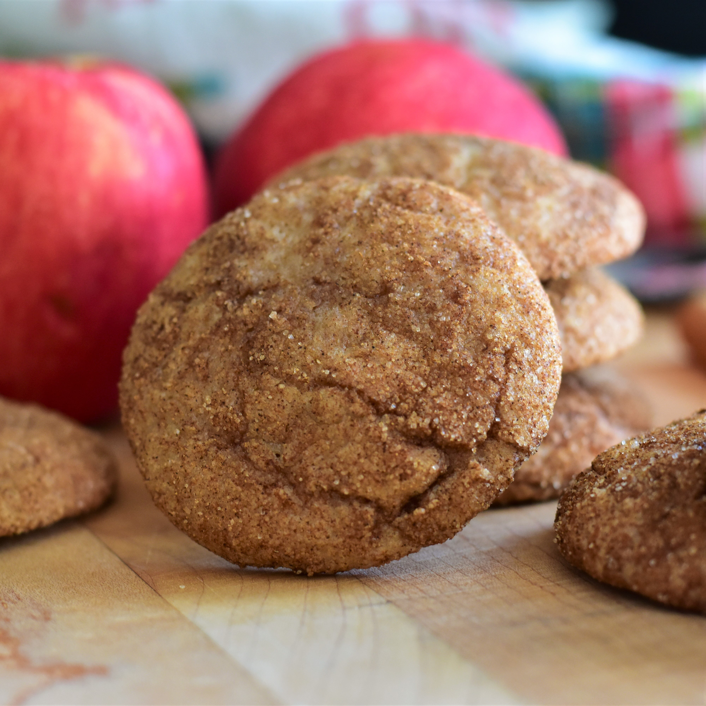

Apple Butter Snickerdoodles

Description
Thanks for making it past the gigantic image.
These snickerdoodle cookies have a hint of apple butter for a different take on the classic favorite.
Ingredients
- All Purpose Flour
- Cream of Tartar
- Baking Soda
- Salt
- Cinnamon
- Nutmeg
- Sugar
- Butter
- Egg
- Vanilla Extract
Steps
- Whisk together flour, cream of tartar, baking soda, salt, 1/4 teaspoon cinnamon, and nutmeg in a medium bowl until
combined.
- Mix together butter and 1 1/2 cups sugar in a large bowl until thoroughly combined. Stir in egg and vanilla until
incorporated. Add apple butter and mix until combined. Pour in 1/2 of the dry ingredients and mix until just combined.
Add remaining dry ingredients and mix just until no dry clumps of flour remain. Cover bowl and refrigerate for at least
2 hours, or up to 24 hours.
- Preheat the oven to 375 degrees F (190 degrees C). Line 2 baking sheets with parchment paper.
- Mix together remaining 1/4 cup sugar and 2 tablespoons cinnamon in a shallow bowl or pie pan. Drop tablespoon-sized
pieces of dough into the cinnamon-sugar mixture and roll into balls, coating well. Place 1 inch apart on the prepared
baking sheets.
- Bake in the preheated oven until edges are just set, about 10 minutes. Allow cookies to cool on baking sheets for 5
minutes before removing to a wire rack to cool completely.
Back to HomePage